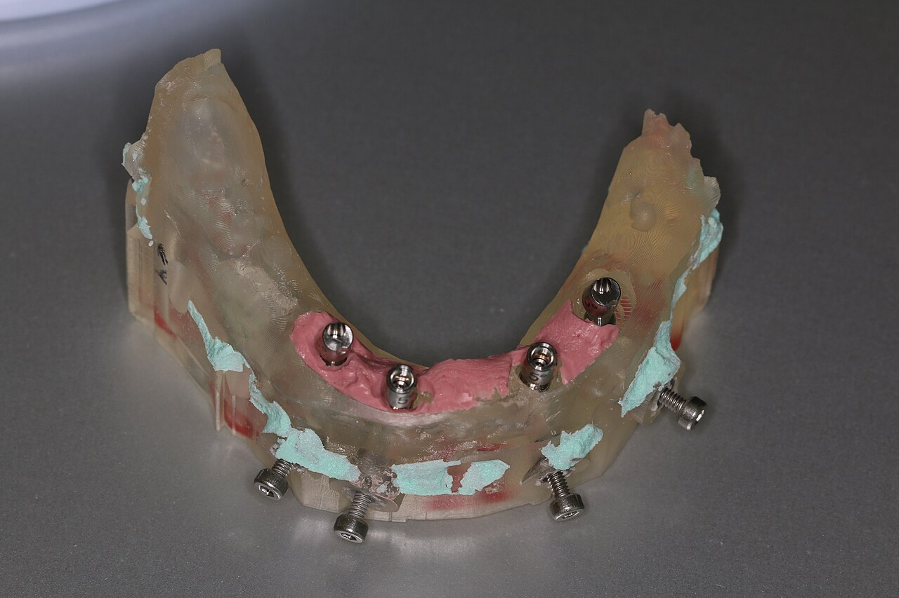
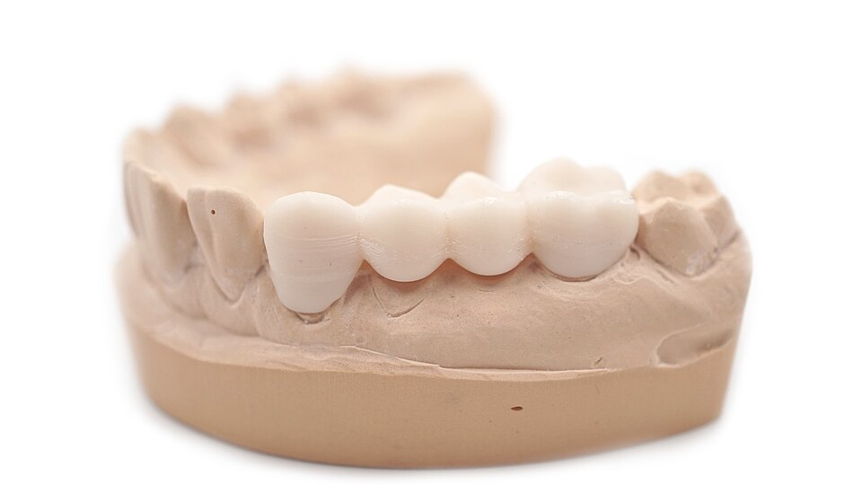
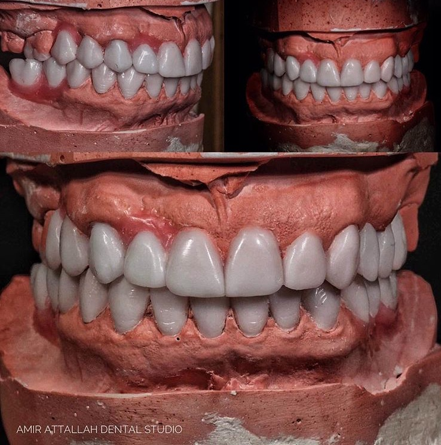
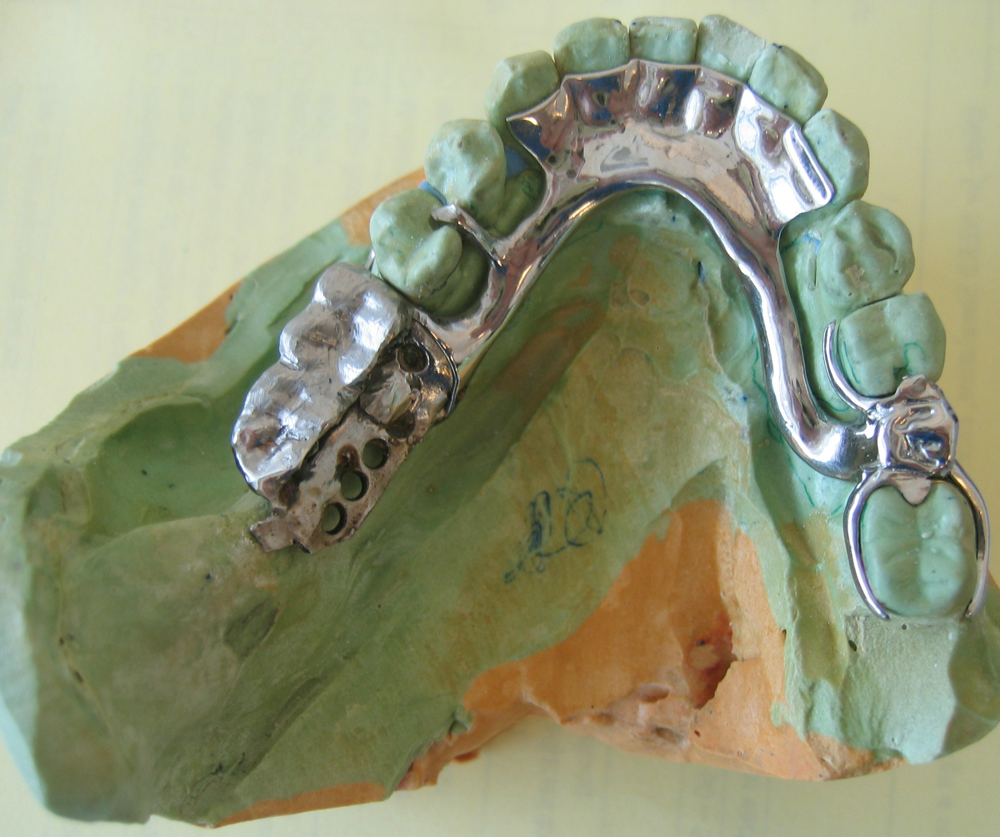

APLICAÇÕES DIGITAIS
Onde o fluxo digital ajuda de verdade.

Modelos
Modelos físicos para prova, conferência de contatos e comunicação com a bancada.

Guias Cirúrgicos
Guias cirúrgicos planejados para estabilidade, janela de conferência e orientação clínica.

Provisórios
Provisórios para fase de cicatrização, prova estética ou proteção do preparo.

Mock-ups
Ensaios de forma e volume antes da produção da peça definitiva.

Estruturas
Padrões e estruturas auxiliares para acelerar provas e reduzir improviso.
Controle Digital
- Planejamento e design CAD/CAM
- Arquivos organizados por caso
- Parâmetros repetíveis de produção
- Conferência antes da bancada
O melhor dos
dois mundos
dois mundos
Acabamento Artesanal
- Ajuste de textura e brilho
- Polimento em áreas funcionais
- Caracterização quando o caso pede
- Conferência de contato e anatomia